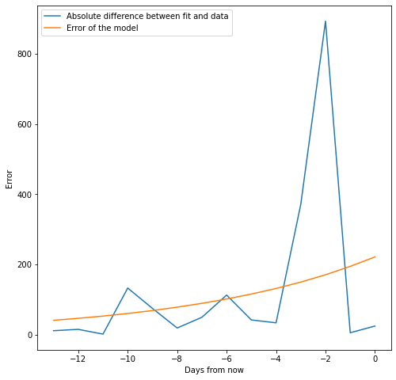
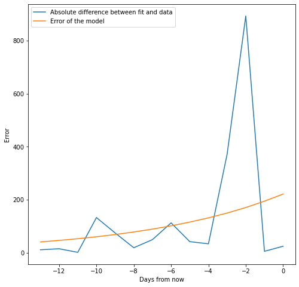
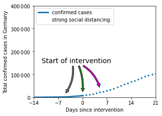
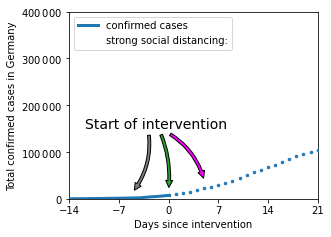

Covid Forecast with PyMC3¶
Attribution¶
This is work done by the Priesemann Group for inferring the parameters for COVID-19 and performing predictions. Full attribution is given to the original authors and I have simply modified it to make it suitable for this course.
The source code can be found here. An overview of the methods can be found here.
Goal¶
Obtain the data that has the number of COVID-19 cases starting from January for each country.
Select a country of choice to infer the COVID-19 parameters and extract the number of confirmed cases (You will need the total population of the country that you select).
Use the SIR model as a disease model ([Notebook].(https://github.com/sjster/Epidemic/blob/master/Epidemic.ipynb)). This is a set of non-linear differential equations that are used to model disease propagation.
Setup a PyMC3 model to infer the SIR parameters from the number of confirmed cases (S,I, mu, lambda).
a. Select appropriate priors for each variable.
b. Use a Lognormal distribution for I_begin.
c. λ is the fraction of people that are newly infected each day. Use a Lognormal distribution for this.
d. μ is the fraction of people that recover each day. Use a Lognormal distribution.
e. The prior of the error of observed cases can use a Half Cauchy distribution.
Predict cases into the future.
a. Compare the predictions with the real observations and compute the error.
b. Note how the error varies as you increase the number of days chosen for the forecast.
Obtaining and Filtering the Data¶
import pandas as pd
import numpy as np
import matplotlib.pyplot as plt
import scipy.stats
confirmed_cases_url = 'https://raw.githubusercontent.com/CSSEGISandData/COVID-19/master/csse_covid_19_data/csse_covid_19_time_series/time_series_covid19_confirmed_global.csv'
confirmed_cases = pd.read_csv(confirmed_cases_url, sep=',')
deaths_url = 'https://raw.githubusercontent.com/CSSEGISandData/COVID-19/master/csse_covid_19_data/csse_covid_19_time_series/time_series_covid19_deaths_global.csv'
deaths = pd.read_csv(deaths_url, sep=',')
path_to_save = ''
confirmed_cases
| Province/State | Country/Region | Lat | Long | 1/22/20 | 1/23/20 | 1/24/20 | 1/25/20 | 1/26/20 | 1/27/20 | ... | 9/10/20 | 9/11/20 | 9/12/20 | 9/13/20 | 9/14/20 | 9/15/20 | 9/16/20 | 9/17/20 | 9/18/20 | 9/19/20 | |
|---|---|---|---|---|---|---|---|---|---|---|---|---|---|---|---|---|---|---|---|---|---|
| 0 | NaN | Afghanistan | 33.939110 | 67.709953 | 0 | 0 | 0 | 0 | 0 | 0 | ... | 38572 | 38606 | 38641 | 38716 | 38772 | 38815 | 38855 | 38872 | 38883 | 38919 |
| 1 | NaN | Albania | 41.153300 | 20.168300 | 0 | 0 | 0 | 0 | 0 | 0 | ... | 10860 | 11021 | 11185 | 11353 | 11520 | 11672 | 11816 | 11948 | 12073 | 12226 |
| 2 | NaN | Algeria | 28.033900 | 1.659600 | 0 | 0 | 0 | 0 | 0 | 0 | ... | 47488 | 47752 | 48007 | 48254 | 48496 | 48734 | 48966 | 49194 | 49413 | 49623 |
| 3 | NaN | Andorra | 42.506300 | 1.521800 | 0 | 0 | 0 | 0 | 0 | 0 | ... | 1301 | 1344 | 1344 | 1344 | 1438 | 1438 | 1483 | 1483 | 1564 | 1564 |
| 4 | NaN | Angola | -11.202700 | 17.873900 | 0 | 0 | 0 | 0 | 0 | 0 | ... | 3217 | 3279 | 3335 | 3388 | 3439 | 3569 | 3675 | 3789 | 3848 | 3901 |
| ... | ... | ... | ... | ... | ... | ... | ... | ... | ... | ... | ... | ... | ... | ... | ... | ... | ... | ... | ... | ... | ... |
| 261 | NaN | West Bank and Gaza | 31.952200 | 35.233200 | 0 | 0 | 0 | 0 | 0 | 0 | ... | 28664 | 29256 | 29906 | 30574 | 31362 | 32250 | 33006 | 33843 | 34401 | 35003 |
| 262 | NaN | Western Sahara | 24.215500 | -12.885800 | 0 | 0 | 0 | 0 | 0 | 0 | ... | 10 | 10 | 10 | 10 | 10 | 10 | 10 | 10 | 10 | 10 |
| 263 | NaN | Yemen | 15.552727 | 48.516388 | 0 | 0 | 0 | 0 | 0 | 0 | ... | 2003 | 2007 | 2009 | 2011 | 2013 | 2016 | 2019 | 2022 | 2024 | 2026 |
| 264 | NaN | Zambia | -13.133897 | 27.849332 | 0 | 0 | 0 | 0 | 0 | 0 | ... | 13214 | 13323 | 13466 | 13539 | 13720 | 13819 | 13887 | 13928 | 14022 | 14070 |
| 265 | NaN | Zimbabwe | -19.015438 | 29.154857 | 0 | 0 | 0 | 0 | 0 | 0 | ... | 7453 | 7479 | 7508 | 7526 | 7531 | 7576 | 7598 | 7633 | 7647 | 7672 |
266 rows × 246 columns
confirmed_cases[confirmed_cases['Country/Region'] == 'China']
| Province/State | Country/Region | Lat | Long | 1/22/20 | 1/23/20 | 1/24/20 | 1/25/20 | 1/26/20 | 1/27/20 | ... | 9/10/20 | 9/11/20 | 9/12/20 | 9/13/20 | 9/14/20 | 9/15/20 | 9/16/20 | 9/17/20 | 9/18/20 | 9/19/20 | |
|---|---|---|---|---|---|---|---|---|---|---|---|---|---|---|---|---|---|---|---|---|---|
| 56 | Anhui | China | 31.8257 | 117.2264 | 1 | 9 | 15 | 39 | 60 | 70 | ... | 991 | 991 | 991 | 991 | 991 | 991 | 991 | 991 | 991 | 991 |
| 57 | Beijing | China | 40.1824 | 116.4142 | 14 | 22 | 36 | 41 | 68 | 80 | ... | 935 | 935 | 935 | 935 | 935 | 935 | 935 | 935 | 935 | 935 |
| 58 | Chongqing | China | 30.0572 | 107.8740 | 6 | 9 | 27 | 57 | 75 | 110 | ... | 584 | 584 | 584 | 584 | 584 | 584 | 584 | 584 | 584 | 584 |
| 59 | Fujian | China | 26.0789 | 117.9874 | 1 | 5 | 10 | 18 | 35 | 59 | ... | 387 | 388 | 388 | 390 | 390 | 392 | 392 | 393 | 394 | 395 |
| 60 | Gansu | China | 35.7518 | 104.2861 | 0 | 2 | 2 | 4 | 7 | 14 | ... | 170 | 170 | 170 | 170 | 170 | 170 | 170 | 170 | 170 | 170 |
| 61 | Guangdong | China | 23.3417 | 113.4244 | 26 | 32 | 53 | 78 | 111 | 151 | ... | 1774 | 1776 | 1777 | 1778 | 1782 | 1783 | 1784 | 1787 | 1793 | 1797 |
| 62 | Guangxi | China | 23.8298 | 108.7881 | 2 | 5 | 23 | 23 | 36 | 46 | ... | 257 | 257 | 258 | 258 | 258 | 258 | 258 | 258 | 258 | 258 |
| 63 | Guizhou | China | 26.8154 | 106.8748 | 1 | 3 | 3 | 4 | 5 | 7 | ... | 147 | 147 | 147 | 147 | 147 | 147 | 147 | 147 | 147 | 147 |
| 64 | Hainan | China | 19.1959 | 109.7453 | 4 | 5 | 8 | 19 | 22 | 33 | ... | 171 | 171 | 171 | 171 | 171 | 171 | 171 | 171 | 171 | 171 |
| 65 | Hebei | China | 39.5490 | 116.1306 | 1 | 1 | 2 | 8 | 13 | 18 | ... | 365 | 365 | 365 | 365 | 365 | 365 | 365 | 365 | 365 | 365 |
| 66 | Heilongjiang | China | 47.8620 | 127.7615 | 0 | 2 | 4 | 9 | 15 | 21 | ... | 948 | 948 | 948 | 948 | 948 | 948 | 948 | 948 | 948 | 948 |
| 67 | Henan | China | 37.8957 | 114.9042 | 5 | 5 | 9 | 32 | 83 | 128 | ... | 1276 | 1276 | 1277 | 1277 | 1277 | 1277 | 1278 | 1278 | 1278 | 1279 |
| 68 | Hong Kong | China | 22.3000 | 114.2000 | 0 | 2 | 2 | 5 | 8 | 8 | ... | 4913 | 4925 | 4938 | 4957 | 4971 | 4975 | 4984 | 4993 | 4996 | 5009 |
| 69 | Hubei | China | 30.9756 | 112.2707 | 444 | 444 | 549 | 761 | 1058 | 1423 | ... | 68139 | 68139 | 68139 | 68139 | 68139 | 68139 | 68139 | 68139 | 68139 | 68139 |
| 70 | Hunan | China | 27.6104 | 111.7088 | 4 | 9 | 24 | 43 | 69 | 100 | ... | 1019 | 1019 | 1019 | 1019 | 1019 | 1019 | 1019 | 1019 | 1019 | 1019 |
| 71 | Inner Mongolia | China | 44.0935 | 113.9448 | 0 | 0 | 1 | 7 | 7 | 11 | ... | 261 | 261 | 261 | 261 | 261 | 261 | 261 | 261 | 261 | 261 |
| 72 | Jiangsu | China | 32.9711 | 119.4550 | 1 | 5 | 9 | 18 | 33 | 47 | ... | 665 | 665 | 665 | 665 | 665 | 665 | 665 | 665 | 665 | 665 |
| 73 | Jiangxi | China | 27.6140 | 115.7221 | 2 | 7 | 18 | 18 | 36 | 72 | ... | 935 | 935 | 935 | 935 | 935 | 935 | 935 | 935 | 935 | 935 |
| 74 | Jilin | China | 43.6661 | 126.1923 | 0 | 1 | 3 | 4 | 4 | 6 | ... | 157 | 157 | 157 | 157 | 157 | 157 | 157 | 157 | 157 | 157 |
| 75 | Liaoning | China | 41.2956 | 122.6085 | 2 | 3 | 4 | 17 | 21 | 27 | ... | 264 | 264 | 264 | 264 | 264 | 264 | 264 | 264 | 265 | 265 |
| 76 | Macau | China | 22.1667 | 113.5500 | 1 | 2 | 2 | 2 | 5 | 6 | ... | 46 | 46 | 46 | 46 | 46 | 46 | 46 | 46 | 46 | 46 |
| 77 | Ningxia | China | 37.2692 | 106.1655 | 1 | 1 | 2 | 3 | 4 | 7 | ... | 75 | 75 | 75 | 75 | 75 | 75 | 75 | 75 | 75 | 75 |
| 78 | Qinghai | China | 35.7452 | 95.9956 | 0 | 0 | 0 | 1 | 1 | 6 | ... | 18 | 18 | 18 | 18 | 18 | 18 | 18 | 18 | 18 | 18 |
| 79 | Shaanxi | China | 35.1917 | 108.8701 | 0 | 3 | 5 | 15 | 22 | 35 | ... | 379 | 380 | 381 | 381 | 381 | 382 | 384 | 397 | 399 | 399 |
| 80 | Shandong | China | 36.3427 | 118.1498 | 2 | 6 | 15 | 27 | 46 | 75 | ... | 831 | 831 | 831 | 831 | 831 | 831 | 831 | 831 | 831 | 831 |
| 81 | Shanghai | China | 31.2020 | 121.4491 | 9 | 16 | 20 | 33 | 40 | 53 | ... | 937 | 939 | 942 | 947 | 948 | 950 | 954 | 966 | 968 | 972 |
| 82 | Shanxi | China | 37.5777 | 112.2922 | 1 | 1 | 1 | 6 | 9 | 13 | ... | 203 | 203 | 203 | 203 | 203 | 203 | 203 | 203 | 203 | 203 |
| 83 | Sichuan | China | 30.6171 | 102.7103 | 5 | 8 | 15 | 28 | 44 | 69 | ... | 665 | 665 | 665 | 665 | 666 | 670 | 670 | 670 | 672 | 672 |
| 84 | Tianjin | China | 39.3054 | 117.3230 | 4 | 4 | 8 | 10 | 14 | 23 | ... | 233 | 233 | 234 | 234 | 234 | 234 | 234 | 237 | 237 | 237 |
| 85 | Tibet | China | 31.6927 | 88.0924 | 0 | 0 | 0 | 0 | 0 | 0 | ... | 1 | 1 | 1 | 1 | 1 | 1 | 1 | 1 | 1 | 1 |
| 86 | Xinjiang | China | 41.1129 | 85.2401 | 0 | 2 | 2 | 3 | 4 | 5 | ... | 902 | 902 | 902 | 902 | 902 | 902 | 902 | 902 | 902 | 902 |
| 87 | Yunnan | China | 24.9740 | 101.4870 | 1 | 2 | 5 | 11 | 16 | 26 | ... | 201 | 201 | 201 | 203 | 204 | 205 | 206 | 206 | 206 | 206 |
| 88 | Zhejiang | China | 29.1832 | 120.0934 | 10 | 27 | 43 | 62 | 104 | 128 | ... | 1278 | 1278 | 1280 | 1280 | 1281 | 1282 | 1282 | 1282 | 1282 | 1282 |
33 rows × 246 columns
import pymc3 as pm
import theano.tensor as tt
import theano
import datetime
from datetime import datetime
import time
data_end = '3/15/20' #Take the data until yesterday
data_begin = '3/1/20'
num_days_to_predict = 28
cases_country = confirmed_cases.loc[confirmed_cases["Country/Region"] == "Germany"]
cases_obs = np.array(
confirmed_cases.loc[confirmed_cases["Country/Region"] == "Germany", data_begin:data_end]
)[0]
date_data_end = confirmed_cases.loc[confirmed_cases["Country/Region"] == "Germany", data_begin:data_end].columns[-1]
month, day, year = map(int,date_data_end.split('/'))
date_data_end = datetime.date(year+2000, month, day)
date_today = date_data_end + datetime.timedelta(days=1)
print('Cases yesterday ({}): {} and day before yesterday: {}'.format(date_data_end.isoformat(), *cases_obs[:-3:-1]))
num_days = len(cases_obs)
np.random.seed(0)
Cases yesterday (2020-03-15): 5795 and day before yesterday: 4585
Modeling Covid with PyMC3¶
%matplotlib inline
import pymc3 as pm
import arviz as az
import theano.tensor as tt
import theano
import datetime
import time
data_end = '3/15/20' #Take the data until yesterday
data_begin = '3/1/20'
num_days_to_predict = 28
cases_obs = np.array(
confirmed_cases.loc[confirmed_cases["Country/Region"] == "Germany", data_begin:data_end]
)[0]
date_data_end = confirmed_cases.loc[confirmed_cases["Country/Region"] == "Germany", data_begin:data_end].columns[-1]
month, day, year = map(int,date_data_end.split('/'))
date_data_end = datetime.date(year+2000, month, day)
date_today = date_data_end + datetime.timedelta(days=1)
print('Cases yesterday ({}): {} and day before yesterday: {}'.format(date_data_end.isoformat(), *cases_obs[:-3:-1]))
num_days = len(cases_obs)
np.random.seed(0)
# ------------------------------------------------------------------------------ #
# model setup and training
# ------------------------------------------------------------------------------ #
def SIR_model(λ, μ, S_begin, I_begin, N):
new_I_0 = tt.zeros_like(I_begin)
def next_day(λ, S_t, I_t, _):
new_I_t = λ/N*I_t*S_t # new_I_t is delta I_t or infected during the period
# t and t-1
S_t = S_t - new_I_t
I_t = I_t + new_I_t - μ * I_t # I_t is the total infected at time t
return S_t, I_t, new_I_t
outputs , _ = theano.scan(fn=next_day, sequences=[λ],
outputs_info=[S_begin, I_begin, new_I_0])
S_all, I_all, new_I_all = outputs
return S_all, I_all, new_I_all
with pm.Model() as model:
# true cases at begin of loaded data but we do not know the real number
I_begin = pm.Lognormal("I_begin", mu=np.log(cases_obs[0]), sigma=0.9)
# fraction of people that are newly infected each day
λ = pm.Lognormal("λ", mu=np.log(0.4), sigma=0.5)
# fraction of people that recover each day, recovery rate mu
μ = pm.Lognormal('μ', mu=np.log(1/8), sigma=0.2)
# prior of the error of observed cases
σ_obs = pm.HalfCauchy("σ_obs", beta=1)
N_germany = 83.7e6 # Population of the country
# -------------------------------------------------------------------------- #
# training the model with loaded data
# -------------------------------------------------------------------------- #
S_begin = N_germany - I_begin # This is an estimate, we don't know the real I_begin
S_past, I_past, new_I_past = SIR_model(λ=λ * tt.ones(num_days-1), μ=μ,
S_begin=S_begin, I_begin=I_begin,
N=N_germany)
new_infections_obs = np.diff(cases_obs) # delta cases per day or new infections per day
# Approximates Poisson
# calculate the likelihood of the model:
# observed cases are distributed following studentT around the model
pm.StudentT(
"obs",
nu=4,
mu=new_I_past, # distribution mean around what it should be based on SIR
sigma=new_I_past ** 0.5 * σ_obs,
observed=new_infections_obs
)
S_past = pm.Deterministic('S_past', S_past)
I_past = pm.Deterministic('I_past', I_past)
new_I_past = pm.Deterministic('new_I_past', new_I_past)
# -------------------------------------------------------------------------- #
# prediction, start with no changes in policy
# -------------------------------------------------------------------------- #
# delay in days between contracting the disease and being recorded
delay = pm.Lognormal("delay", mu=np.log(8), sigma=0.1)
S_begin = S_past[-1]
I_begin = I_past[-1]
forecast_no_change = SIR_model(λ=λ*tt.ones(num_days_to_predict), μ=μ,
S_begin=S_begin, I_begin=I_begin, N=N_germany)
S_no_change, I_no_change, new_I_no_change = forecast_no_change
#saves the variables for later retrieval
pm.Deterministic('S_no_change', S_no_change)
pm.Deterministic('I_no_change', I_no_change)
pm.Deterministic('new_I_no_change', new_I_no_change)
# -------------------------------------------------------------------------- #
# run model, pm trains and predicts when calling this
# -------------------------------------------------------------------------- #
time_beg = time.time()
trace = pm.sample(draws=500, tune=800, chains=2)
print("Model run in {:.2f} s".format(time.time() - time_beg))
az.plot_trace(trace)
Cases yesterday (2020-03-15): 5795 and day before yesterday: 4585
/Users/srijith.rajamohan/opt/anaconda3/envs/compstats_env/lib/python3.8/site-packages/theano/scan_module/scan_perform_ext.py:75: UserWarning: The file scan_perform.c is not available. This donot happen normally. You are probably in a strangesetup. This mean Theano can not use the cython code for scan. If youwant to remove this warning, use the Theano flag'cxx=' (set to an empty string) to disable all ccode generation.
warnings.warn(
/Users/srijith.rajamohan/opt/anaconda3/envs/compstats_env/lib/python3.8/site-packages/theano/scan_module/scan_perform_ext.py:75: UserWarning: The file scan_perform.c is not available. This donot happen normally. You are probably in a strangesetup. This mean Theano can not use the cython code for scan. If youwant to remove this warning, use the Theano flag'cxx=' (set to an empty string) to disable all ccode generation.
warnings.warn(
Auto-assigning NUTS sampler...
INFO:pymc3:Auto-assigning NUTS sampler...
Initializing NUTS using jitter+adapt_diag...
INFO:pymc3:Initializing NUTS using jitter+adapt_diag...
/Users/srijith.rajamohan/opt/anaconda3/envs/compstats_env/lib/python3.8/site-packages/theano/scan_module/scan_perform_ext.py:75: UserWarning: The file scan_perform.c is not available. This donot happen normally. You are probably in a strangesetup. This mean Theano can not use the cython code for scan. If youwant to remove this warning, use the Theano flag'cxx=' (set to an empty string) to disable all ccode generation.
warnings.warn(
/Users/srijith.rajamohan/opt/anaconda3/envs/compstats_env/lib/python3.8/site-packages/theano/scan_module/scan_perform_ext.py:75: UserWarning: The file scan_perform.c is not available. This donot happen normally. You are probably in a strangesetup. This mean Theano can not use the cython code for scan. If youwant to remove this warning, use the Theano flag'cxx=' (set to an empty string) to disable all ccode generation.
warnings.warn(
/Users/srijith.rajamohan/opt/anaconda3/envs/compstats_env/lib/python3.8/site-packages/theano/scan_module/scan_perform_ext.py:75: UserWarning: The file scan_perform.c is not available. This donot happen normally. You are probably in a strangesetup. This mean Theano can not use the cython code for scan. If youwant to remove this warning, use the Theano flag'cxx=' (set to an empty string) to disable all ccode generation.
warnings.warn(
Multiprocess sampling (2 chains in 4 jobs)
INFO:pymc3:Multiprocess sampling (2 chains in 4 jobs)
NUTS: [delay, σ_obs, μ, λ, I_begin]
INFO:pymc3:NUTS: [delay, σ_obs, μ, λ, I_begin]
/Users/srijith.rajamohan/opt/anaconda3/envs/compstats_env/lib/python3.8/site-packages/theano/scan_module/scan_perform_ext.py:75: UserWarning: The file scan_perform.c is not available. This donot happen normally. You are probably in a strangesetup. This mean Theano can not use the cython code for scan. If youwant to remove this warning, use the Theano flag'cxx=' (set to an empty string) to disable all ccode generation.
warnings.warn(
/Users/srijith.rajamohan/opt/anaconda3/envs/compstats_env/lib/python3.8/site-packages/theano/scan_module/scan_perform_ext.py:75: UserWarning: The file scan_perform.c is not available. This donot happen normally. You are probably in a strangesetup. This mean Theano can not use the cython code for scan. If youwant to remove this warning, use the Theano flag'cxx=' (set to an empty string) to disable all ccode generation.
warnings.warn(
/Users/srijith.rajamohan/opt/anaconda3/envs/compstats_env/lib/python3.8/site-packages/theano/scan_module/scan_perform_ext.py:75: UserWarning: The file scan_perform.c is not available. This donot happen normally. You are probably in a strangesetup. This mean Theano can not use the cython code for scan. If youwant to remove this warning, use the Theano flag'cxx=' (set to an empty string) to disable all ccode generation.
warnings.warn(
/Users/srijith.rajamohan/opt/anaconda3/envs/compstats_env/lib/python3.8/site-packages/theano/scan_module/scan_perform_ext.py:75: UserWarning: The file scan_perform.c is not available. This donot happen normally. You are probably in a strangesetup. This mean Theano can not use the cython code for scan. If youwant to remove this warning, use the Theano flag'cxx=' (set to an empty string) to disable all ccode generation.
warnings.warn(
Sampling 2 chains, 0 divergences: 100%|██████████| 2600/2600 [00:31<00:00, 82.59draws/s]
/Users/srijith.rajamohan/opt/anaconda3/envs/compstats_env/lib/python3.8/site-packages/theano/scan_module/scan_perform_ext.py:75: UserWarning: The file scan_perform.c is not available. This donot happen normally. You are probably in a strangesetup. This mean Theano can not use the cython code for scan. If youwant to remove this warning, use the Theano flag'cxx=' (set to an empty string) to disable all ccode generation.
warnings.warn(
/Users/srijith.rajamohan/opt/anaconda3/envs/compstats_env/lib/python3.8/site-packages/theano/scan_module/scan_perform_ext.py:75: UserWarning: The file scan_perform.c is not available. This donot happen normally. You are probably in a strangesetup. This mean Theano can not use the cython code for scan. If youwant to remove this warning, use the Theano flag'cxx=' (set to an empty string) to disable all ccode generation.
warnings.warn(
/Users/srijith.rajamohan/opt/anaconda3/envs/compstats_env/lib/python3.8/site-packages/theano/scan_module/scan_perform_ext.py:75: UserWarning: The file scan_perform.c is not available. This donot happen normally. You are probably in a strangesetup. This mean Theano can not use the cython code for scan. If youwant to remove this warning, use the Theano flag'cxx=' (set to an empty string) to disable all ccode generation.
warnings.warn(
/Users/srijith.rajamohan/opt/anaconda3/envs/compstats_env/lib/python3.8/site-packages/theano/scan_module/scan_perform_ext.py:75: UserWarning: The file scan_perform.c is not available. This donot happen normally. You are probably in a strangesetup. This mean Theano can not use the cython code for scan. If youwant to remove this warning, use the Theano flag'cxx=' (set to an empty string) to disable all ccode generation.
warnings.warn(
/Users/srijith.rajamohan/opt/anaconda3/envs/compstats_env/lib/python3.8/site-packages/theano/scan_module/scan_perform_ext.py:75: UserWarning: The file scan_perform.c is not available. This donot happen normally. You are probably in a strangesetup. This mean Theano can not use the cython code for scan. If youwant to remove this warning, use the Theano flag'cxx=' (set to an empty string) to disable all ccode generation.
warnings.warn(
/Users/srijith.rajamohan/opt/anaconda3/envs/compstats_env/lib/python3.8/site-packages/theano/scan_module/scan_perform_ext.py:75: UserWarning: The file scan_perform.c is not available. This donot happen normally. You are probably in a strangesetup. This mean Theano can not use the cython code for scan. If youwant to remove this warning, use the Theano flag'cxx=' (set to an empty string) to disable all ccode generation.
warnings.warn(
Model run in 46.50 s
/Users/srijith.rajamohan/opt/anaconda3/envs/compstats_env/lib/python3.8/site-packages/theano/scan_module/scan_perform_ext.py:75: UserWarning: The file scan_perform.c is not available. This donot happen normally. You are probably in a strangesetup. This mean Theano can not use the cython code for scan. If youwant to remove this warning, use the Theano flag'cxx=' (set to an empty string) to disable all ccode generation.
warnings.warn(
/Users/srijith.rajamohan/opt/anaconda3/envs/compstats_env/lib/python3.8/site-packages/theano/scan_module/scan_perform_ext.py:75: UserWarning: The file scan_perform.c is not available. This donot happen normally. You are probably in a strangesetup. This mean Theano can not use the cython code for scan. If youwant to remove this warning, use the Theano flag'cxx=' (set to an empty string) to disable all ccode generation.
warnings.warn(
/Users/srijith.rajamohan/opt/anaconda3/envs/compstats_env/lib/python3.8/site-packages/arviz/plots/traceplot.py:164: SyntaxWarning: rcParams['plot.max_subplots'] (40) is smaller than the number of variables to plot (131), generating only 40 plots
warnings.warn(
/Users/srijith.rajamohan/opt/anaconda3/envs/compstats_env/lib/python3.8/site-packages/arviz/plots/backends/matplotlib/distplot.py:36: UserWarning: Argument backend_kwargs has not effect in matplotlib.plot_distSupplied value won't be used
warnings.warn(
/Users/srijith.rajamohan/opt/anaconda3/envs/compstats_env/lib/python3.8/site-packages/arviz/plots/backends/matplotlib/distplot.py:36: UserWarning: Argument backend_kwargs has not effect in matplotlib.plot_distSupplied value won't be used
warnings.warn(
/Users/srijith.rajamohan/opt/anaconda3/envs/compstats_env/lib/python3.8/site-packages/arviz/plots/backends/matplotlib/distplot.py:36: UserWarning: Argument backend_kwargs has not effect in matplotlib.plot_distSupplied value won't be used
warnings.warn(
/Users/srijith.rajamohan/opt/anaconda3/envs/compstats_env/lib/python3.8/site-packages/arviz/plots/backends/matplotlib/distplot.py:36: UserWarning: Argument backend_kwargs has not effect in matplotlib.plot_distSupplied value won't be used
warnings.warn(
/Users/srijith.rajamohan/opt/anaconda3/envs/compstats_env/lib/python3.8/site-packages/arviz/plots/backends/matplotlib/distplot.py:36: UserWarning: Argument backend_kwargs has not effect in matplotlib.plot_distSupplied value won't be used
warnings.warn(
/Users/srijith.rajamohan/opt/anaconda3/envs/compstats_env/lib/python3.8/site-packages/arviz/plots/backends/matplotlib/distplot.py:36: UserWarning: Argument backend_kwargs has not effect in matplotlib.plot_distSupplied value won't be used
warnings.warn(
/Users/srijith.rajamohan/opt/anaconda3/envs/compstats_env/lib/python3.8/site-packages/arviz/plots/backends/matplotlib/distplot.py:36: UserWarning: Argument backend_kwargs has not effect in matplotlib.plot_distSupplied value won't be used
warnings.warn(
/Users/srijith.rajamohan/opt/anaconda3/envs/compstats_env/lib/python3.8/site-packages/arviz/plots/backends/matplotlib/distplot.py:36: UserWarning: Argument backend_kwargs has not effect in matplotlib.plot_distSupplied value won't be used
warnings.warn(
/Users/srijith.rajamohan/opt/anaconda3/envs/compstats_env/lib/python3.8/site-packages/arviz/plots/backends/matplotlib/distplot.py:36: UserWarning: Argument backend_kwargs has not effect in matplotlib.plot_distSupplied value won't be used
warnings.warn(
/Users/srijith.rajamohan/opt/anaconda3/envs/compstats_env/lib/python3.8/site-packages/arviz/plots/backends/matplotlib/distplot.py:36: UserWarning: Argument backend_kwargs has not effect in matplotlib.plot_distSupplied value won't be used
warnings.warn(
/Users/srijith.rajamohan/opt/anaconda3/envs/compstats_env/lib/python3.8/site-packages/arviz/plots/backends/matplotlib/distplot.py:36: UserWarning: Argument backend_kwargs has not effect in matplotlib.plot_distSupplied value won't be used
warnings.warn(
/Users/srijith.rajamohan/opt/anaconda3/envs/compstats_env/lib/python3.8/site-packages/arviz/plots/backends/matplotlib/distplot.py:36: UserWarning: Argument backend_kwargs has not effect in matplotlib.plot_distSupplied value won't be used
warnings.warn(
/Users/srijith.rajamohan/opt/anaconda3/envs/compstats_env/lib/python3.8/site-packages/arviz/plots/backends/matplotlib/distplot.py:36: UserWarning: Argument backend_kwargs has not effect in matplotlib.plot_distSupplied value won't be used
warnings.warn(
/Users/srijith.rajamohan/opt/anaconda3/envs/compstats_env/lib/python3.8/site-packages/arviz/plots/backends/matplotlib/distplot.py:36: UserWarning: Argument backend_kwargs has not effect in matplotlib.plot_distSupplied value won't be used
warnings.warn(
/Users/srijith.rajamohan/opt/anaconda3/envs/compstats_env/lib/python3.8/site-packages/arviz/plots/backends/matplotlib/distplot.py:36: UserWarning: Argument backend_kwargs has not effect in matplotlib.plot_distSupplied value won't be used
warnings.warn(
/Users/srijith.rajamohan/opt/anaconda3/envs/compstats_env/lib/python3.8/site-packages/arviz/plots/backends/matplotlib/distplot.py:36: UserWarning: Argument backend_kwargs has not effect in matplotlib.plot_distSupplied value won't be used
warnings.warn(
/Users/srijith.rajamohan/opt/anaconda3/envs/compstats_env/lib/python3.8/site-packages/arviz/plots/backends/matplotlib/distplot.py:36: UserWarning: Argument backend_kwargs has not effect in matplotlib.plot_distSupplied value won't be used
warnings.warn(
/Users/srijith.rajamohan/opt/anaconda3/envs/compstats_env/lib/python3.8/site-packages/arviz/plots/backends/matplotlib/distplot.py:36: UserWarning: Argument backend_kwargs has not effect in matplotlib.plot_distSupplied value won't be used
warnings.warn(
/Users/srijith.rajamohan/opt/anaconda3/envs/compstats_env/lib/python3.8/site-packages/arviz/plots/backends/matplotlib/distplot.py:36: UserWarning: Argument backend_kwargs has not effect in matplotlib.plot_distSupplied value won't be used
warnings.warn(
/Users/srijith.rajamohan/opt/anaconda3/envs/compstats_env/lib/python3.8/site-packages/arviz/plots/backends/matplotlib/distplot.py:36: UserWarning: Argument backend_kwargs has not effect in matplotlib.plot_distSupplied value won't be used
warnings.warn(
/Users/srijith.rajamohan/opt/anaconda3/envs/compstats_env/lib/python3.8/site-packages/arviz/plots/backends/matplotlib/distplot.py:36: UserWarning: Argument backend_kwargs has not effect in matplotlib.plot_distSupplied value won't be used
warnings.warn(
/Users/srijith.rajamohan/opt/anaconda3/envs/compstats_env/lib/python3.8/site-packages/arviz/plots/backends/matplotlib/distplot.py:36: UserWarning: Argument backend_kwargs has not effect in matplotlib.plot_distSupplied value won't be used
warnings.warn(
/Users/srijith.rajamohan/opt/anaconda3/envs/compstats_env/lib/python3.8/site-packages/arviz/plots/backends/matplotlib/distplot.py:36: UserWarning: Argument backend_kwargs has not effect in matplotlib.plot_distSupplied value won't be used
warnings.warn(
/Users/srijith.rajamohan/opt/anaconda3/envs/compstats_env/lib/python3.8/site-packages/arviz/plots/backends/matplotlib/distplot.py:36: UserWarning: Argument backend_kwargs has not effect in matplotlib.plot_distSupplied value won't be used
warnings.warn(
/Users/srijith.rajamohan/opt/anaconda3/envs/compstats_env/lib/python3.8/site-packages/arviz/plots/backends/matplotlib/distplot.py:36: UserWarning: Argument backend_kwargs has not effect in matplotlib.plot_distSupplied value won't be used
warnings.warn(
/Users/srijith.rajamohan/opt/anaconda3/envs/compstats_env/lib/python3.8/site-packages/arviz/plots/backends/matplotlib/distplot.py:36: UserWarning: Argument backend_kwargs has not effect in matplotlib.plot_distSupplied value won't be used
warnings.warn(
/Users/srijith.rajamohan/opt/anaconda3/envs/compstats_env/lib/python3.8/site-packages/arviz/plots/backends/matplotlib/distplot.py:36: UserWarning: Argument backend_kwargs has not effect in matplotlib.plot_distSupplied value won't be used
warnings.warn(
/Users/srijith.rajamohan/opt/anaconda3/envs/compstats_env/lib/python3.8/site-packages/arviz/plots/backends/matplotlib/distplot.py:36: UserWarning: Argument backend_kwargs has not effect in matplotlib.plot_distSupplied value won't be used
warnings.warn(
/Users/srijith.rajamohan/opt/anaconda3/envs/compstats_env/lib/python3.8/site-packages/arviz/plots/backends/matplotlib/distplot.py:36: UserWarning: Argument backend_kwargs has not effect in matplotlib.plot_distSupplied value won't be used
warnings.warn(
/Users/srijith.rajamohan/opt/anaconda3/envs/compstats_env/lib/python3.8/site-packages/arviz/plots/backends/matplotlib/distplot.py:36: UserWarning: Argument backend_kwargs has not effect in matplotlib.plot_distSupplied value won't be used
warnings.warn(
/Users/srijith.rajamohan/opt/anaconda3/envs/compstats_env/lib/python3.8/site-packages/arviz/plots/backends/matplotlib/distplot.py:36: UserWarning: Argument backend_kwargs has not effect in matplotlib.plot_distSupplied value won't be used
warnings.warn(
/Users/srijith.rajamohan/opt/anaconda3/envs/compstats_env/lib/python3.8/site-packages/arviz/plots/backends/matplotlib/distplot.py:36: UserWarning: Argument backend_kwargs has not effect in matplotlib.plot_distSupplied value won't be used
warnings.warn(
/Users/srijith.rajamohan/opt/anaconda3/envs/compstats_env/lib/python3.8/site-packages/arviz/plots/backends/matplotlib/distplot.py:36: UserWarning: Argument backend_kwargs has not effect in matplotlib.plot_distSupplied value won't be used
warnings.warn(
/Users/srijith.rajamohan/opt/anaconda3/envs/compstats_env/lib/python3.8/site-packages/arviz/plots/backends/matplotlib/distplot.py:36: UserWarning: Argument backend_kwargs has not effect in matplotlib.plot_distSupplied value won't be used
warnings.warn(
/Users/srijith.rajamohan/opt/anaconda3/envs/compstats_env/lib/python3.8/site-packages/arviz/plots/backends/matplotlib/distplot.py:36: UserWarning: Argument backend_kwargs has not effect in matplotlib.plot_distSupplied value won't be used
warnings.warn(
/Users/srijith.rajamohan/opt/anaconda3/envs/compstats_env/lib/python3.8/site-packages/arviz/plots/backends/matplotlib/distplot.py:36: UserWarning: Argument backend_kwargs has not effect in matplotlib.plot_distSupplied value won't be used
warnings.warn(
/Users/srijith.rajamohan/opt/anaconda3/envs/compstats_env/lib/python3.8/site-packages/arviz/plots/backends/matplotlib/distplot.py:36: UserWarning: Argument backend_kwargs has not effect in matplotlib.plot_distSupplied value won't be used
warnings.warn(
/Users/srijith.rajamohan/opt/anaconda3/envs/compstats_env/lib/python3.8/site-packages/arviz/plots/backends/matplotlib/distplot.py:36: UserWarning: Argument backend_kwargs has not effect in matplotlib.plot_distSupplied value won't be used
warnings.warn(
/Users/srijith.rajamohan/opt/anaconda3/envs/compstats_env/lib/python3.8/site-packages/arviz/plots/backends/matplotlib/distplot.py:36: UserWarning: Argument backend_kwargs has not effect in matplotlib.plot_distSupplied value won't be used
warnings.warn(
/Users/srijith.rajamohan/opt/anaconda3/envs/compstats_env/lib/python3.8/site-packages/arviz/plots/backends/matplotlib/distplot.py:36: UserWarning: Argument backend_kwargs has not effect in matplotlib.plot_distSupplied value won't be used
warnings.warn(
/Users/srijith.rajamohan/opt/anaconda3/envs/compstats_env/lib/python3.8/site-packages/arviz/plots/backends/matplotlib/distplot.py:36: UserWarning: Argument backend_kwargs has not effect in matplotlib.plot_distSupplied value won't be used
warnings.warn(
/Users/srijith.rajamohan/opt/anaconda3/envs/compstats_env/lib/python3.8/site-packages/arviz/plots/backends/matplotlib/distplot.py:36: UserWarning: Argument backend_kwargs has not effect in matplotlib.plot_distSupplied value won't be used
warnings.warn(
/Users/srijith.rajamohan/opt/anaconda3/envs/compstats_env/lib/python3.8/site-packages/arviz/plots/backends/matplotlib/distplot.py:36: UserWarning: Argument backend_kwargs has not effect in matplotlib.plot_distSupplied value won't be used
warnings.warn(
/Users/srijith.rajamohan/opt/anaconda3/envs/compstats_env/lib/python3.8/site-packages/arviz/plots/backends/matplotlib/distplot.py:36: UserWarning: Argument backend_kwargs has not effect in matplotlib.plot_distSupplied value won't be used
warnings.warn(
/Users/srijith.rajamohan/opt/anaconda3/envs/compstats_env/lib/python3.8/site-packages/arviz/plots/backends/matplotlib/distplot.py:36: UserWarning: Argument backend_kwargs has not effect in matplotlib.plot_distSupplied value won't be used
warnings.warn(
/Users/srijith.rajamohan/opt/anaconda3/envs/compstats_env/lib/python3.8/site-packages/arviz/plots/backends/matplotlib/distplot.py:36: UserWarning: Argument backend_kwargs has not effect in matplotlib.plot_distSupplied value won't be used
warnings.warn(
/Users/srijith.rajamohan/opt/anaconda3/envs/compstats_env/lib/python3.8/site-packages/arviz/plots/backends/matplotlib/distplot.py:36: UserWarning: Argument backend_kwargs has not effect in matplotlib.plot_distSupplied value won't be used
warnings.warn(
/Users/srijith.rajamohan/opt/anaconda3/envs/compstats_env/lib/python3.8/site-packages/arviz/plots/backends/matplotlib/distplot.py:36: UserWarning: Argument backend_kwargs has not effect in matplotlib.plot_distSupplied value won't be used
warnings.warn(
/Users/srijith.rajamohan/opt/anaconda3/envs/compstats_env/lib/python3.8/site-packages/arviz/plots/backends/matplotlib/distplot.py:36: UserWarning: Argument backend_kwargs has not effect in matplotlib.plot_distSupplied value won't be used
warnings.warn(
/Users/srijith.rajamohan/opt/anaconda3/envs/compstats_env/lib/python3.8/site-packages/arviz/plots/backends/matplotlib/distplot.py:36: UserWarning: Argument backend_kwargs has not effect in matplotlib.plot_distSupplied value won't be used
warnings.warn(
/Users/srijith.rajamohan/opt/anaconda3/envs/compstats_env/lib/python3.8/site-packages/arviz/plots/backends/matplotlib/distplot.py:36: UserWarning: Argument backend_kwargs has not effect in matplotlib.plot_distSupplied value won't be used
warnings.warn(
/Users/srijith.rajamohan/opt/anaconda3/envs/compstats_env/lib/python3.8/site-packages/arviz/plots/backends/matplotlib/distplot.py:36: UserWarning: Argument backend_kwargs has not effect in matplotlib.plot_distSupplied value won't be used
warnings.warn(
/Users/srijith.rajamohan/opt/anaconda3/envs/compstats_env/lib/python3.8/site-packages/arviz/plots/backends/matplotlib/distplot.py:36: UserWarning: Argument backend_kwargs has not effect in matplotlib.plot_distSupplied value won't be used
warnings.warn(
/Users/srijith.rajamohan/opt/anaconda3/envs/compstats_env/lib/python3.8/site-packages/arviz/plots/backends/matplotlib/distplot.py:36: UserWarning: Argument backend_kwargs has not effect in matplotlib.plot_distSupplied value won't be used
warnings.warn(
/Users/srijith.rajamohan/opt/anaconda3/envs/compstats_env/lib/python3.8/site-packages/arviz/plots/backends/matplotlib/distplot.py:36: UserWarning: Argument backend_kwargs has not effect in matplotlib.plot_distSupplied value won't be used
warnings.warn(
/Users/srijith.rajamohan/opt/anaconda3/envs/compstats_env/lib/python3.8/site-packages/arviz/plots/backends/matplotlib/distplot.py:36: UserWarning: Argument backend_kwargs has not effect in matplotlib.plot_distSupplied value won't be used
warnings.warn(
/Users/srijith.rajamohan/opt/anaconda3/envs/compstats_env/lib/python3.8/site-packages/arviz/plots/backends/matplotlib/distplot.py:36: UserWarning: Argument backend_kwargs has not effect in matplotlib.plot_distSupplied value won't be used
warnings.warn(
/Users/srijith.rajamohan/opt/anaconda3/envs/compstats_env/lib/python3.8/site-packages/arviz/plots/backends/matplotlib/distplot.py:36: UserWarning: Argument backend_kwargs has not effect in matplotlib.plot_distSupplied value won't be used
warnings.warn(
/Users/srijith.rajamohan/opt/anaconda3/envs/compstats_env/lib/python3.8/site-packages/arviz/plots/backends/matplotlib/distplot.py:36: UserWarning: Argument backend_kwargs has not effect in matplotlib.plot_distSupplied value won't be used
warnings.warn(
/Users/srijith.rajamohan/opt/anaconda3/envs/compstats_env/lib/python3.8/site-packages/arviz/plots/backends/matplotlib/distplot.py:36: UserWarning: Argument backend_kwargs has not effect in matplotlib.plot_distSupplied value won't be used
warnings.warn(
/Users/srijith.rajamohan/opt/anaconda3/envs/compstats_env/lib/python3.8/site-packages/arviz/plots/backends/matplotlib/distplot.py:36: UserWarning: Argument backend_kwargs has not effect in matplotlib.plot_distSupplied value won't be used
warnings.warn(
/Users/srijith.rajamohan/opt/anaconda3/envs/compstats_env/lib/python3.8/site-packages/arviz/plots/backends/matplotlib/distplot.py:36: UserWarning: Argument backend_kwargs has not effect in matplotlib.plot_distSupplied value won't be used
warnings.warn(
/Users/srijith.rajamohan/opt/anaconda3/envs/compstats_env/lib/python3.8/site-packages/arviz/plots/backends/matplotlib/distplot.py:36: UserWarning: Argument backend_kwargs has not effect in matplotlib.plot_distSupplied value won't be used
warnings.warn(
/Users/srijith.rajamohan/opt/anaconda3/envs/compstats_env/lib/python3.8/site-packages/arviz/plots/backends/matplotlib/distplot.py:36: UserWarning: Argument backend_kwargs has not effect in matplotlib.plot_distSupplied value won't be used
warnings.warn(
/Users/srijith.rajamohan/opt/anaconda3/envs/compstats_env/lib/python3.8/site-packages/arviz/plots/backends/matplotlib/distplot.py:36: UserWarning: Argument backend_kwargs has not effect in matplotlib.plot_distSupplied value won't be used
warnings.warn(
/Users/srijith.rajamohan/opt/anaconda3/envs/compstats_env/lib/python3.8/site-packages/arviz/plots/backends/matplotlib/distplot.py:36: UserWarning: Argument backend_kwargs has not effect in matplotlib.plot_distSupplied value won't be used
warnings.warn(
/Users/srijith.rajamohan/opt/anaconda3/envs/compstats_env/lib/python3.8/site-packages/arviz/plots/backends/matplotlib/distplot.py:36: UserWarning: Argument backend_kwargs has not effect in matplotlib.plot_distSupplied value won't be used
warnings.warn(
/Users/srijith.rajamohan/opt/anaconda3/envs/compstats_env/lib/python3.8/site-packages/arviz/plots/backends/matplotlib/distplot.py:36: UserWarning: Argument backend_kwargs has not effect in matplotlib.plot_distSupplied value won't be used
warnings.warn(
/Users/srijith.rajamohan/opt/anaconda3/envs/compstats_env/lib/python3.8/site-packages/arviz/plots/backends/matplotlib/distplot.py:36: UserWarning: Argument backend_kwargs has not effect in matplotlib.plot_distSupplied value won't be used
warnings.warn(
/Users/srijith.rajamohan/opt/anaconda3/envs/compstats_env/lib/python3.8/site-packages/arviz/plots/backends/matplotlib/distplot.py:36: UserWarning: Argument backend_kwargs has not effect in matplotlib.plot_distSupplied value won't be used
warnings.warn(
/Users/srijith.rajamohan/opt/anaconda3/envs/compstats_env/lib/python3.8/site-packages/arviz/plots/backends/matplotlib/distplot.py:36: UserWarning: Argument backend_kwargs has not effect in matplotlib.plot_distSupplied value won't be used
warnings.warn(
/Users/srijith.rajamohan/opt/anaconda3/envs/compstats_env/lib/python3.8/site-packages/arviz/plots/backends/matplotlib/distplot.py:36: UserWarning: Argument backend_kwargs has not effect in matplotlib.plot_distSupplied value won't be used
warnings.warn(
/Users/srijith.rajamohan/opt/anaconda3/envs/compstats_env/lib/python3.8/site-packages/arviz/plots/backends/matplotlib/distplot.py:36: UserWarning: Argument backend_kwargs has not effect in matplotlib.plot_distSupplied value won't be used
warnings.warn(
/Users/srijith.rajamohan/opt/anaconda3/envs/compstats_env/lib/python3.8/site-packages/arviz/plots/backends/matplotlib/distplot.py:36: UserWarning: Argument backend_kwargs has not effect in matplotlib.plot_distSupplied value won't be used
warnings.warn(
/Users/srijith.rajamohan/opt/anaconda3/envs/compstats_env/lib/python3.8/site-packages/arviz/plots/backends/matplotlib/distplot.py:36: UserWarning: Argument backend_kwargs has not effect in matplotlib.plot_distSupplied value won't be used
warnings.warn(
/Users/srijith.rajamohan/opt/anaconda3/envs/compstats_env/lib/python3.8/site-packages/arviz/plots/backends/matplotlib/distplot.py:36: UserWarning: Argument backend_kwargs has not effect in matplotlib.plot_distSupplied value won't be used
warnings.warn(
/Users/srijith.rajamohan/opt/anaconda3/envs/compstats_env/lib/python3.8/site-packages/arviz/plots/backends/matplotlib/distplot.py:36: UserWarning: Argument backend_kwargs has not effect in matplotlib.plot_distSupplied value won't be used
warnings.warn(
/Users/srijith.rajamohan/opt/anaconda3/envs/compstats_env/lib/python3.8/site-packages/arviz/plots/backends/matplotlib/distplot.py:36: UserWarning: Argument backend_kwargs has not effect in matplotlib.plot_distSupplied value won't be used
warnings.warn(
/Users/srijith.rajamohan/opt/anaconda3/envs/compstats_env/lib/python3.8/site-packages/arviz/plots/backends/matplotlib/distplot.py:36: UserWarning: Argument backend_kwargs has not effect in matplotlib.plot_distSupplied value won't be used
warnings.warn(
/Users/srijith.rajamohan/opt/anaconda3/envs/compstats_env/lib/python3.8/site-packages/arviz/plots/backends/matplotlib/distplot.py:36: UserWarning: Argument backend_kwargs has not effect in matplotlib.plot_distSupplied value won't be used
warnings.warn(
array([[<matplotlib.axes._subplots.AxesSubplot object at 0x7ff362e14070>,
<matplotlib.axes._subplots.AxesSubplot object at 0x7ff362e281c0>],
[<matplotlib.axes._subplots.AxesSubplot object at 0x7ff362e52430>,
<matplotlib.axes._subplots.AxesSubplot object at 0x7ff362e7f7c0>],
[<matplotlib.axes._subplots.AxesSubplot object at 0x7ff362d69e20>,
<matplotlib.axes._subplots.AxesSubplot object at 0x7ff36bb297c0>],
[<matplotlib.axes._subplots.AxesSubplot object at 0x7ff36bb52f40>,
<matplotlib.axes._subplots.AxesSubplot object at 0x7ff36bb7bd30>],
[<matplotlib.axes._subplots.AxesSubplot object at 0x7ff36bbac310>,
<matplotlib.axes._subplots.AxesSubplot object at 0x7ff36bbd86d0>],
[<matplotlib.axes._subplots.AxesSubplot object at 0x7ff36bc68a60>,
<matplotlib.axes._subplots.AxesSubplot object at 0x7ff36bc919a0>],
[<matplotlib.axes._subplots.AxesSubplot object at 0x7ff36bcc7190>,
<matplotlib.axes._subplots.AxesSubplot object at 0x7ff36bcf4550>],
[<matplotlib.axes._subplots.AxesSubplot object at 0x7ff36bd248e0>,
<matplotlib.axes._subplots.AxesSubplot object at 0x7ff36bd54fa0>],
[<matplotlib.axes._subplots.AxesSubplot object at 0x7ff36bd7fb80>,
<matplotlib.axes._subplots.AxesSubplot object at 0x7ff36bf263a0>],
[<matplotlib.axes._subplots.AxesSubplot object at 0x7ff36bf54760>,
<matplotlib.axes._subplots.AxesSubplot object at 0x7ff36c105e50>],
[<matplotlib.axes._subplots.AxesSubplot object at 0x7ff36c131fa0>,
<matplotlib.axes._subplots.AxesSubplot object at 0x7ff36c166160>],
[<matplotlib.axes._subplots.AxesSubplot object at 0x7ff36c1965e0>,
<matplotlib.axes._subplots.AxesSubplot object at 0x7ff36c241970>],
[<matplotlib.axes._subplots.AxesSubplot object at 0x7ff36c26e4f0>,
<matplotlib.axes._subplots.AxesSubplot object at 0x7ff36c29dc10>],
[<matplotlib.axes._subplots.AxesSubplot object at 0x7ff36c2cf400>,
<matplotlib.axes._subplots.AxesSubplot object at 0x7ff36c4037c0>],
[<matplotlib.axes._subplots.AxesSubplot object at 0x7ff36c434e50>,
<matplotlib.axes._subplots.AxesSubplot object at 0x7ff36c462a60>],
[<matplotlib.axes._subplots.AxesSubplot object at 0x7ff36c497280>,
<matplotlib.axes._subplots.AxesSubplot object at 0x7ff36c4c6640>],
[<matplotlib.axes._subplots.AxesSubplot object at 0x7ff36c4f79d0>,
<matplotlib.axes._subplots.AxesSubplot object at 0x7ff36c525d30>],
[<matplotlib.axes._subplots.AxesSubplot object at 0x7ff36c558100>,
<matplotlib.axes._subplots.AxesSubplot object at 0x7ff36c588490>],
[<matplotlib.axes._subplots.AxesSubplot object at 0x7ff36c5b7850>,
<matplotlib.axes._subplots.AxesSubplot object at 0x7ff36c5e6f10>],
[<matplotlib.axes._subplots.AxesSubplot object at 0x7ff36c7d0d00>,
<matplotlib.axes._subplots.AxesSubplot object at 0x7ff36c804310>],
[<matplotlib.axes._subplots.AxesSubplot object at 0x7ff36c8316d0>,
<matplotlib.axes._subplots.AxesSubplot object at 0x7ff36c864a60>],
[<matplotlib.axes._subplots.AxesSubplot object at 0x7ff36c8909a0>,
<matplotlib.axes._subplots.AxesSubplot object at 0x7ff36cec0190>],
[<matplotlib.axes._subplots.AxesSubplot object at 0x7ff36cef0550>,
<matplotlib.axes._subplots.AxesSubplot object at 0x7ff36d02c910>],
[<matplotlib.axes._subplots.AxesSubplot object at 0x7ff36d059a30>,
<matplotlib.axes._subplots.AxesSubplot object at 0x7ff36d085bb0>],
[<matplotlib.axes._subplots.AxesSubplot object at 0x7ff36d0bc3d0>,
<matplotlib.axes._subplots.AxesSubplot object at 0x7ff36d0eb790>],
[<matplotlib.axes._subplots.AxesSubplot object at 0x7ff36c757bb0>,
<matplotlib.axes._subplots.AxesSubplot object at 0x7ff362d7b9d0>],
[<matplotlib.axes._subplots.AxesSubplot object at 0x7ff362c99970>,
<matplotlib.axes._subplots.AxesSubplot object at 0x7ff3612ac250>],
[<matplotlib.axes._subplots.AxesSubplot object at 0x7ff362cb0820>,
<matplotlib.axes._subplots.AxesSubplot object at 0x7ff362cfeaf0>],
[<matplotlib.axes._subplots.AxesSubplot object at 0x7ff36cbecfd0>,
<matplotlib.axes._subplots.AxesSubplot object at 0x7ff361571e50>],
[<matplotlib.axes._subplots.AxesSubplot object at 0x7ff361578580>,
<matplotlib.axes._subplots.AxesSubplot object at 0x7ff36b9976a0>],
[<matplotlib.axes._subplots.AxesSubplot object at 0x7ff36cdf4d90>,
<matplotlib.axes._subplots.AxesSubplot object at 0x7ff36cd80c70>],
[<matplotlib.axes._subplots.AxesSubplot object at 0x7ff36cd6c8b0>,
<matplotlib.axes._subplots.AxesSubplot object at 0x7ff36cdb6bb0>],
[<matplotlib.axes._subplots.AxesSubplot object at 0x7ff36cc073d0>,
<matplotlib.axes._subplots.AxesSubplot object at 0x7ff36ca787c0>],
[<matplotlib.axes._subplots.AxesSubplot object at 0x7ff36c9ed520>,
<matplotlib.axes._subplots.AxesSubplot object at 0x7ff36c770610>],
[<matplotlib.axes._subplots.AxesSubplot object at 0x7ff36c72a370>,
<matplotlib.axes._subplots.AxesSubplot object at 0x7ff36c7b3520>],
[<matplotlib.axes._subplots.AxesSubplot object at 0x7ff36ee3ab20>,
<matplotlib.axes._subplots.AxesSubplot object at 0x7ff36b816160>],
[<matplotlib.axes._subplots.AxesSubplot object at 0x7ff370363a30>,
<matplotlib.axes._subplots.AxesSubplot object at 0x7ff36f98ebb0>],
[<matplotlib.axes._subplots.AxesSubplot object at 0x7ff36f8e5040>,
<matplotlib.axes._subplots.AxesSubplot object at 0x7ff36f919a60>],
[<matplotlib.axes._subplots.AxesSubplot object at 0x7ff36f000790>,
<matplotlib.axes._subplots.AxesSubplot object at 0x7ff36ef5b790>],
[<matplotlib.axes._subplots.AxesSubplot object at 0x7ff36ef6c460>,
<matplotlib.axes._subplots.AxesSubplot object at 0x7ff36ee98220>]],
dtype=object)
az.summary(trace, var_names=['new_I_no_change'])
/Users/srijith.rajamohan/opt/anaconda3/envs/compstats_env/lib/python3.8/site-packages/theano/scan_module/scan_perform_ext.py:75: UserWarning: The file scan_perform.c is not available. This donot happen normally. You are probably in a strangesetup. This mean Theano can not use the cython code for scan. If youwant to remove this warning, use the Theano flag'cxx=' (set to an empty string) to disable all ccode generation.
warnings.warn(
| mean | sd | hpd_3% | hpd_97% | mcse_mean | mcse_sd | ess_mean | ess_sd | ess_bulk | ess_tail | r_hat | |
|---|---|---|---|---|---|---|---|---|---|---|---|
| new_I_no_change[0] | 1561.915 | 279.505 | 1040.496 | 2053.534 | 9.882 | 6.990 | 800.0 | 800.0 | 712.0 | 741.0 | 1.0 |
| new_I_no_change[1] | 2040.278 | 419.970 | 1367.456 | 2870.443 | 15.820 | 11.191 | 705.0 | 705.0 | 634.0 | 741.0 | 1.0 |
| new_I_no_change[2] | 2667.928 | 628.514 | 1582.900 | 3788.289 | 24.985 | 17.675 | 633.0 | 633.0 | 583.0 | 681.0 | 1.0 |
| new_I_no_change[3] | 3492.348 | 934.973 | 1962.760 | 5193.396 | 38.626 | 27.326 | 586.0 | 586.0 | 533.0 | 667.0 | 1.0 |
| new_I_no_change[4] | 4576.417 | 1382.075 | 2263.840 | 6959.602 | 58.881 | 41.657 | 551.0 | 551.0 | 500.0 | 624.0 | 1.0 |
| new_I_no_change[5] | 6003.486 | 2030.888 | 2747.265 | 9494.872 | 88.043 | 62.290 | 532.0 | 532.0 | 479.0 | 533.0 | 1.0 |
| new_I_no_change[6] | 7884.163 | 2968.566 | 2889.497 | 12485.894 | 130.786 | 92.532 | 515.0 | 515.0 | 461.0 | 490.0 | 1.0 |
| new_I_no_change[7] | 10365.364 | 4319.321 | 3529.046 | 17064.774 | 192.659 | 136.310 | 503.0 | 503.0 | 452.0 | 473.0 | 1.0 |
| new_I_no_change[8] | 13642.394 | 6259.941 | 4201.565 | 23497.954 | 281.859 | 199.422 | 493.0 | 493.0 | 445.0 | 473.0 | 1.0 |
| new_I_no_change[9] | 17975.067 | 9041.649 | 5331.511 | 32407.127 | 409.993 | 290.083 | 486.0 | 486.0 | 440.0 | 467.0 | 1.0 |
| new_I_no_change[10] | 23709.150 | 13020.723 | 5893.153 | 43837.401 | 593.471 | 419.902 | 481.0 | 481.0 | 438.0 | 441.0 | 1.0 |
| new_I_no_change[11] | 31304.812 | 18701.028 | 7089.533 | 60085.731 | 855.410 | 605.236 | 478.0 | 478.0 | 436.0 | 441.0 | 1.0 |
| new_I_no_change[12] | 41374.166 | 26792.312 | 8984.824 | 82969.464 | 1228.267 | 869.049 | 476.0 | 476.0 | 433.0 | 411.0 | 1.0 |
| new_I_no_change[13] | 54730.347 | 38288.541 | 10046.699 | 113106.242 | 1761.207 | 1246.130 | 473.0 | 473.0 | 432.0 | 411.0 | 1.0 |
| new_I_no_change[14] | 72450.827 | 54569.815 | 13695.798 | 156090.190 | 2515.754 | 1780.010 | 471.0 | 471.0 | 430.0 | 411.0 | 1.0 |
| new_I_no_change[15] | 95957.300 | 77528.016 | 16673.357 | 212284.347 | 3579.930 | 2532.969 | 469.0 | 469.0 | 432.0 | 372.0 | 1.0 |
| new_I_no_change[16] | 127113.005 | 109707.135 | 11160.777 | 281465.695 | 5071.926 | 3588.631 | 468.0 | 468.0 | 431.0 | 372.0 | 1.0 |
| new_I_no_change[17] | 168334.386 | 154428.763 | 13045.747 | 382804.703 | 7147.073 | 5056.904 | 467.0 | 467.0 | 428.0 | 372.0 | 1.0 |
| new_I_no_change[18] | 222705.721 | 215833.838 | 15248.227 | 519668.992 | 10001.658 | 7076.674 | 466.0 | 466.0 | 426.0 | 372.0 | 1.0 |
| new_I_no_change[19] | 294070.020 | 298706.492 | 17821.390 | 706994.250 | 13868.623 | 9812.770 | 464.0 | 464.0 | 429.0 | 404.0 | 1.0 |
| new_I_no_change[20] | 387045.213 | 407862.780 | 24233.224 | 959729.126 | 18996.041 | 13440.737 | 461.0 | 461.0 | 429.0 | 404.0 | 1.0 |
| new_I_no_change[21] | 506884.255 | 546842.850 | 31019.862 | 1286635.809 | 25563.816 | 18087.882 | 458.0 | 458.0 | 430.0 | 429.0 | 1.0 |
| new_I_no_change[22] | 659077.828 | 715797.392 | 28437.228 | 1693255.606 | 33966.879 | 24034.002 | 444.0 | 444.0 | 433.0 | 429.0 | 1.0 |
| new_I_no_change[23] | 848628.112 | 909053.858 | 33223.117 | 2204533.346 | 44079.278 | 31190.156 | 425.0 | 425.0 | 432.0 | 417.0 | 1.0 |
| new_I_no_change[24] | 1079050.279 | 1113898.264 | 38808.961 | 2846710.917 | 55561.194 | 39316.242 | 402.0 | 402.0 | 435.0 | 417.0 | 1.0 |
| new_I_no_change[25] | 1351366.642 | 1312627.382 | 45326.465 | 3609444.490 | 67574.641 | 47819.471 | 377.0 | 377.0 | 434.0 | 417.0 | 1.0 |
| new_I_no_change[26] | 1663456.140 | 1487957.928 | 63579.516 | 4461959.540 | 78588.435 | 55615.692 | 358.0 | 358.0 | 435.0 | 417.0 | 1.0 |
| new_I_no_change[27] | 2009865.804 | 1627951.090 | 159423.806 | 5405791.787 | 87412.389 | 62260.146 | 347.0 | 342.0 | 419.0 | 424.0 | 1.0 |
future_days = np.array(cases_country.loc[:,'3/16/20':'4/12/20'])[0]
print(future_days)
[ 7272 9257 12327 15320 19848 22213 24873 29056 32986 37323
43938 50871 57695 62095 66885 71808 77872 84794 91159 96092
100123 103374 107663 113296 118181 122171 124908 127854]
Forecast cases into the future¶
The number of days predicted depends on the variable ‘num_days_to_predict’ that is set. This uses the uncertainty from the MCMC simulation to give us estimates for the confidence intervals
plt.figure(figsize=(8,8))
days = np.arange(0, num_days_to_predict)
percentiles = np.percentile(trace.new_I_no_change, q=5.0, axis=0), np.percentile(trace.new_I_no_change, q=95.0, axis=0)
plt.fill_between(days, percentiles[0], percentiles[1], alpha=0.3, color='tab:blue')
plt.plot(days, percentiles[0],np.median(trace.new_I_no_change, axis=0), label='Forecasted Daily Infections')
plt.plot(days, future_days, 'r')
plt.title('Forecast for Daily Infections')
plt.figure(figsize=(8,8))
plt.fill_between(days, percentiles[0], percentiles[1], alpha=0.3, color='tab:blue')
plt.plot(days, percentiles[0],np.median(trace.new_I_no_change, axis=0), label='Forecasted Daily Infections')
plt.plot(days, future_days, 'r')
plt.yscale("log")
plt.title('Forecast for Daily Infections in Log scale')
Text(0.5, 1.0, 'Forecast for Daily Infections in Log scale')
print(percentiles)
print(np.median(trace['new_I_no_change'], axis=0))
(array([ 1160.14543074, 1476.84401526, 1865.48773572, 2331.21012106,
2898.62402961, 3600.16826974, 4460.31784045, 5486.40922354,
6855.32586417, 8501.4302699 , 10626.8386678 , 13199.60509826,
16395.17344201, 20332.13997876, 25092.95447946, 31060.73176785,
38450.91984404, 47589.70816224, 58466.86848557, 71715.58845626,
88522.33979138, 109512.8134872 , 134994.74967149, 165943.21340717,
203840.50918581, 250152.30399711, 306615.28401775, 375265.76771525]), array([2.02198145e+03, 2.73362644e+03, 3.74591991e+03, 5.08318467e+03,
6.87155905e+03, 9.36023346e+03, 1.28970548e+04, 1.75940987e+04,
2.43520671e+04, 3.40224919e+04, 4.69385285e+04, 6.48948532e+04,
8.78307727e+04, 1.19781146e+05, 1.62691104e+05, 2.23043591e+05,
3.05647824e+05, 4.17640781e+05, 5.69029756e+05, 7.66705020e+05,
1.03380379e+06, 1.38617206e+06, 1.83807414e+06, 2.39759105e+06,
3.07476582e+06, 3.85665657e+06, 4.70437344e+06, 5.57435747e+06]))
[ 1539.87459821 1999.12856629 2585.97221696 3350.81740492
4357.00422827 5635.12572709 7311.44973992 9435.30952226
12206.98607013 15882.3904889 20713.44096956 26863.29059536
34871.62269726 45141.36883675 58368.5032532 75465.41997712
97512.83623173 126295.32917592 163512.52894545 211537.4405085
273133.73785035 351707.32523067 451643.60247501 580410.43277407
741503.85514122 943810.7244719 1193690.27095792 1499649.68114016]
cases_obs
array([ 130, 159, 196, 262, 482, 670, 799, 1040, 1176, 1457, 1908,
2078, 3675, 4585, 5795])
np.diff(cases_obs)
array([ 29, 37, 66, 220, 188, 129, 241, 136, 281, 451, 170,
1597, 910, 1210])
Test the SIR_model function¶
Create the variables by assigning a datatype
Assign a test value since theano performs lazy evaluation and therefore cannot be evaulauted uness you use a. .eval() method
b. test_value to intiialize a variable and run it, values can be assigned from a numpy array by casting it with ‘.astype(THEANO_DATATYPE)’
Print the variable value using ‘theano.printing.Print’
from theano import tensor
theano.config.compute_test_value = 'warn'
I_begin = tensor.dscalar('I_begin')
I_begin.tag.test_value = np.log(cases_obs[0]).astype(theano.config.floatX)
S_begin = tensor.dscalar('S_begin')
S_begin = N_germany - I_begin
print(S_begin)
Elemwise{sub,no_inplace}.0
λ = tensor.dscalar('λ')
λ.tag.test_value = np.log(0.4).astype(theano.config.floatX)
μ = tensor.dscalar('μ')
μ.tag.test_value = np.log(1/8).astype(theano.config.floatX)
S_past, I_past, new_I_past = SIR_model(λ=λ * tt.ones(num_days-1), μ=μ, S_begin=S_begin,
I_begin=I_begin,
N=N_germany)
theano.printing.Print('Value of S_past')(S_past)
theano.printing.Print('Value of I_past')(I_past)
theano.printing.Print('Value of new_I_past')(new_I_past)
Value of S_past __str__ = [83699999.59254201 83700009.24036074 83700030.11005007 83700075.2543446
83700172.90829967 83700384.14869766 83700841.094289 83701829.53998952
83703967.71325564 83708592.97981322 83718598.48085828 83740243.53420354
83787072.74621125 83888407.3997477 ]
Value of I_past __str__ = [1.05292113e+01 2.27762721e+01 4.92685091e+01 1.06575199e+02
2.30538141e+02 4.98688329e+02 1.07873597e+03 2.33345865e+03
5.04757622e+03 1.09184493e+04 2.36172255e+04 5.10828118e+04
1.10477321e+05 2.38873797e+05]
Value of new_I_past __str__ = [-4.46007644e+00 -9.64781872e+00 -2.08696893e+01 -4.51442945e+01
-9.76539551e+01 -2.11240398e+02 -4.56945591e+02 -9.88445701e+02
-2.13817327e+03 -4.62526656e+03 -1.00055010e+04 -2.16450533e+04
-4.68292120e+04 -1.01334654e+05]
/Users/srijith.rajamohan/opt/anaconda3/envs/compstats_env/lib/python3.8/site-packages/theano/scan_module/scan_perform_ext.py:75: UserWarning: The file scan_perform.c is not available. This donot happen normally. You are probably in a strangesetup. This mean Theano can not use the cython code for scan. If youwant to remove this warning, use the Theano flag'cxx=' (set to an empty string) to disable all ccode generation.
warnings.warn(
Print{message='Value of new_I_past', attrs=('__str__',), global_fn=<function _print_fn at 0x7ff3883a9820>}.0
I_begin = tensor.dscalar('I_begin')
I_begin.eval({I_begin: np.log(cases_obs[0])})
array(4.86753445)
# Plot the daily new infections computed using SIR (using the inferred parameter distribution)
# against the true values. We have the true values since this is for the last 'n' days that we fit.
time = np.arange(-len(cases_obs)+2, 1)
plt.figure(figsize=(8,8))
plt.plot(time, np.diff(cases_obs), label='data')
percentiles = np.percentile(trace.new_I_past, q=5.0, axis=0), np.percentile(trace.new_I_past, q=95.0, axis=0)
plt.plot(time, np.median(trace.new_I_past, axis=0),color='tab:orange', label='Fit (with 90% CI)')
plt.fill_between(time, percentiles[0], percentiles[1], alpha=0.3, color='tab:orange')
plt.yscale('log')
plt.ylabel('Number of Daily new infections')
plt.xlabel('Days')
plt.legend()
# The likelihood for new cases of daily infections is drawn from a Student-t distribution
# The sigma is a (width) parameter that characterizes the distribution from which the
# number of daily new cases are drawn.
# Hence, error for this variable new_daily_cases is quantified as
# sigma = the value sigma_obs * sqrt(I)
# We plot the distribution of sigma_obs as a histogram
# We plot sigma as a line plot over time to see how it evolves
plt.figure(figsize=(8,8))
plt.hist(trace.σ_obs, bins=50)
plt.ylabel('Number of MCMC samples')
plt.xlabel('Width $\sigma_{obs}$ of Student T')
plt.figure(figsize=(8,8))
plt.plot(time, np.abs(np.median(trace.new_I_past, axis=0) - np.diff(cases_obs)),
label='Absolute difference between fit and data')
plt.plot(time, np.sqrt(np.median(trace.new_I_past, axis=0))*np.median(trace.σ_obs, axis=0),
label='Error of the model')
plt.ylabel('Error')
plt.xlabel('Days from now')
plt.legend(loc='upper left')
<matplotlib.legend.Legend at 0x7ff35f469370>
 

import matplotlib
day_begin = date_data_end - datetime.timedelta(days = num_days)
plt.figure(figsize=(12,8))
bins = np.linspace(-0.15, 0.38, 200)
plt.hist(trace.λ - trace.μ, bins=bins,
label='spread inferred from data\nfrom {} to {}'.format(day_begin.isoformat(), date_data_end.isoformat()))
plt.xlabel('Effective spread $\lambda - \mu$')
plt.ylabel('Number of Monte-Carlo samples')
plt.legend()
<matplotlib.legend.Legend at 0x7ff35af90670>
legends_lang = {
"english": [
# bottom left
"confirmed cases",
[
"uncontrolled spreading",
"mild social distancing",
"strong social distancing",
"strong social distancing\nstarting at day -5",
],
"Days since intervention",
"Total confirmed cases in Germany",
"Start of intervention",
# bottom right
'confirmed cases',['strong social distancing:',
' starting at day 0',
' starting at day 5',
" starting at day -5"],
'Days since intervention',
'Total confirmed cases in Germany',
'Start of intervention',
],
}
obs_cases_labels = ['new_I_no_change']
date_today_formatted = '{}/{}/{}'.format(date_today.month, date_today.day, str(date_today.year)[2:4])
cases_obs_to_plot = np.array(confirmed_cases.loc[confirmed_cases['Country/Region'] == 'Germany', '1/22/20':date_today_formatted])[0]
cases_obs_to_plot_future = np.array(confirmed_cases.loc[confirmed_cases['Country/Region'] == 'Germany', date_today_formatted:])[0]
def return_obs_cases_future(trace):
obs_cases_future = dict()
for label in obs_cases_labels:
obs_cases_future[label] = np.cumsum(trace[label], axis=1) + \
np.sum(trace.new_I_past, axis=1)[:, None] + trace.I_begin[:, None]
obs_cases_future[label] = obs_cases_future[label].T
return obs_cases_future
obs_cases_labels_local = obs_cases_labels[:]
obs_cases_labels_local.pop(0)
for lang, legends_list in legends_lang.items():
fig, axes = plt.subplots(nrows=1, ncols=2, figsize=[9, 3.6])
# bottom left
colors = ["tab:red", "tab:orange", "tab:green", "gray"]
dict_obsc_cases = return_obs_cases_future(trace)
ax = axes[0]
time = np.arange(-len(cases_obs_to_plot)+1, 1)
ax.plot(time, cases_obs_to_plot, label=legends_list[0], linewidth=3, color='tab:blue',
zorder=5)
time = np.arange(0, len(cases_obs_to_plot_future))
ax.plot(time, cases_obs_to_plot_future, '.', markersize=5, color='tab:blue',
zorder=5)
for label, color, legend in zip(obs_cases_labels_local, colors, legends_list[1]):
time = np.arange(0, num_days_to_predict)
cases = dict_obsc_cases[label]
#cases = np.concatenate([np.ones((1,cases.shape[1]))*cases_obs[-1], cases], axis=0)
median = np.median(cases, axis=-1)
percentiles = (
np.percentile(cases, q=2.5, axis=-1),
np.percentile(cases, q=97.5, axis=-1),
)
ax.plot(time, median, color, linewidth=3, label=legend)
ax.fill_between(time, percentiles[0], percentiles[1], alpha=0.08, color=color)
ax.set_xlim(-14, 21)
ax.set_ylim(0, 400_000)
ax.set_yscale("linear")
ax.set_xlabel(legends_list[2])
ax.set_ylabel(legends_list[3])
# ax.locator_params(axis='y', nbins=4)
ax.legend(loc="upper left")
ax.set_xticks([-14, -7, 0, 7, 14, 21])
ax.locator_params(nbins=4, axis="y")
func_format = lambda num, _: "${:,.0f}$".format(num).replace(",", "\,")
ax.yaxis.set_major_formatter(matplotlib.ticker.FuncFormatter(func_format))
ax.text(-0.29, 0.98, "A", transform=ax.transAxes, size=20)
ax.annotate(
legends_list[4],
xy=(0.0, 20_000),
xycoords="data",
xytext=(0.35, 0.4),
textcoords="axes fraction",
size=14,
va="center",
ha="center",
arrowprops=dict(
arrowstyle="simple", connectionstyle="arc3,rad=-0.2", fc="black"
),
)
ax.annotate(
"",
xy=(-5.0, 15_000),
xycoords="data",
xytext=(0.32, 0.35),
textcoords="axes fraction",
size=14,
va="center",
ha="center",
arrowprops=dict(
arrowstyle="simple", connectionstyle="arc3,rad=-0.2", fc=colors[3]
),
)
# bottom right
f_alone, ax_alone = plt.subplots(figsize=(4.7,3.4))
for i, (ax, f) in enumerate(((axes[1],fig), (ax_alone, f_alone))):
colors = ["tab:green", "fuchsia", 'gray']
time = np.arange(-len(cases_obs_to_plot)+1, 1)
ax.plot(time, cases_obs_to_plot, label=legends_list[5], linewidth=3, color='tab:blue',
zorder=5)
time = np.arange(0, len(cases_obs_to_plot_future))
ax.plot(time, cases_obs_to_plot_future, '.', markersize=5, color='tab:blue',
zorder=5)
time = np.arange(-len(cases_obs) + 1, 1)
dict_obsc_cases = return_obs_cases_future(trace)
ax.plot([], [], alpha=0, label=legends_list[6][0])
for label, color, legend in zip(obs_cases_labels[2:], colors, legends_list[6][1:]):
time = np.arange(num_days_to_predict)
cases = dict_obsc_cases[label]
#cases = np.concatenate(
# [np.ones((1, cases.shape[1])) * cases_obs[-1], cases], axis=0
#)
median = np.median(cases, axis=-1)
percentiles = (
np.percentile(cases, q=2.5, axis=-1),
np.percentile(cases, q=97.5, axis=-1),
)
ax.plot(time, median, color, linewidth=3, label=legend)
ax.fill_between(time, percentiles[0], percentiles[1], alpha=0.08, color=color)
ax.set_xlim(-14, 21)
ax.set_ylim(0, 400_000)
ax.set_yscale("linear")
ax.set_xlabel(legends_list[7])
ax.set_ylabel(legends_list[8])
ax.locator_params(axis="y", nbins=4)
ax.legend(loc="upper left")
ax.set_xticks([-14, -7, 0, 7, 14, 21])
func_format = lambda num, _: "${:,.0f}$".format(num).replace(",", "\,")
ax.yaxis.set_major_formatter(matplotlib.ticker.FuncFormatter(func_format))
ax.annotate(
legends_list[9],
xy=(0.0, 20_000),
xycoords="data",
xytext=(0.35, 0.4),
textcoords="axes fraction",
size=14,
va="center",
ha="center",
arrowprops=dict(
arrowstyle="simple", connectionstyle="arc3,rad=-0.15", fc=colors[0]
),
)
ax.annotate(
"",
xy=(5.0, 40_000),
xycoords="data",
xytext=(0.4, 0.35),
textcoords="axes fraction",
size=14,
va="center",
ha="center",
arrowprops=dict(
arrowstyle="simple", connectionstyle="arc3,rad=-0.2", fc=colors[1]
),
)
ax.annotate(
"",
xy=(-5.0, 15_000),
xycoords="data",
xytext=(0.32, 0.35),
textcoords="axes fraction",
size=14,
va="center",
ha="center",
arrowprops=dict(
arrowstyle="simple", connectionstyle="arc3,rad=-0.2", fc=colors[2]
),
)
if i == 0:
axes[1].text(-0.29, 0.98, "B", transform=ax.transAxes, size=20)
f.tight_layout()
print('effective m: {:.3f} +- {:.3f}'.format(1+np.median(trace.λ - trace.μ), np.std(trace.λ - trace.μ)))
effective m: 1.298 +- 0.041
 
